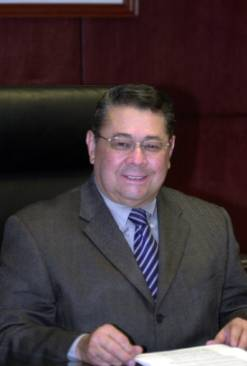

Consejero Jorge Moreno Collado
Originario de Veracruz, donde realizó sus estudios de primaria en la Escuela Federal “Gral. Ignacio Zaragoza”, y de secundaria y preparatoria en el “Ilustre Instituto Veracruzano”.
Fue presidente de la Sociedad de Alumnos y presidente de su generación en el “Ilustre Instituto Veracruzano”.
Cursó sus estudios de Derecho en la Facultad de Derecho de la UNAM, de 1960 a 1964. Presentó su examen profesional el 28 de octubre de 1965, con la tesis Síntesis del Poder del Estado. Realizó estudios de posgrado en la Facultad de Derecho de la UNAM, de 1967 a 1968 y de 2001 a 2002; actualmente es doctorando en esta institución.
Obtuvo el diplomado en Derechos Humanos, becado por la UNAM y la OEA, y fue investigador del Instituto de Investigaciones Sociales de la UNAM, en Sociología Jurídica y Política.
Como alumno en la Facultad de Derecho, fue Consejero Técnico de 1962 a 1964.
Es presidente de la Generación de Abogados 1960-1964, de la Facultad de Derecho de la UNAM.
Actualmente es Consejero de la Judicatura Federal, es Presidente de la Comisión de Creación de Nuevos Órganos, miembro de las Comisiones de Disciplina y Administración, del Comité del Fondo de Apoyo para la Administración de Justicia, del Comité Coordinador para homologar criterios en materia administrativa e interinstitucional del Poder Judicial de la Federación, y de la Comisión del Poder Judicial de la Federación para el Bicentenario del inicio de la Independencia y Centenario del inicio de la Revolución Mexicana.
En el área jurisdiccional, fue Secretario General del Tribunal de lo Contencioso Administrativo del Distrito Federal, en 1972.
En el área administrativa, fue Coordinador General del Consejo Nacional de Población, Secretaría de Gobernación, de 1974 a 1975; Director General de Fomento Ejidal de la Secretaría de la Reforma Agraria, en 1976; Coordinador General de Asesores del Secretario de Educación Pública, Coordinador General Sectorial y de Control de Gestión de la Secretaría de Educación Pública y Coordinador General de la Descentralización Educativa de la Secretaría de Educación Pública, entre 1985 y 1988; Subdirector de Apoyo Jurídico a Delegaciones, BANOBRAS, de 1993 a 1994, y Director General Jurídico en la Secretaría de Agricultura, Ganadería, Desarrollo Rural, de 1998 a 2000.
En el Gobierno del Estado de Veracruz, ocupó en 1988 la cartera de Secretario de Educación y Cultura y la Dirección General de Servicios Coordinados de Educación Pública de la Secretaría de Educación Pública.
En el área de Gobierno, fue Subdelegado Jurídico y de Gobierno del Departamento del D.F. en Benito Juárez, de 1976 a 1981, y Director General de Gobierno de la Secretaría de Gobernación, entre 1988 y 1993; también fue Asesor del Secretario de Gobernación.
En el área Legislativa-Parlamentaria, fue Oficial Mayor de la Cámara de Senadores durante la LII Legislatura, de 1982 a 1985, y Asesor de la Gran Comisión y de la Comisión de Gobernación y Puntos Constitucionales de la LV Legislatura de la Cámara de Diputados del H. Congreso de la Unión, de 1993 a 1994. Fungió como Director General del Centro de Estudios de Derecho e Investigaciones Parlamentarias en la Cámara de Diputados del H. Congreso de la Unión, de septiembre de 2003 a septiembre de 2004, y como Consultor Jurídico Legislativo del Senado de la República, de diciembre de 2006 a noviembre de 2007.
Coordinador de organización de la Reunión Interparlamentaria Mundial sobre Desarme en Materia de Armamento Convencional, y miembro de la Delegación Mexicana, México, D.F., abril de 1985.
Diputado Federal a la LVI Legislatura de la Cámara de Diputados del H. Congreso de la Unión; presidente del Comité del Instituto de Investigaciones Legislativas de la Cámara de Diputados; miembro de la Comisión de Gobernación y Puntos Constitucionales, y de la Comisión de Justicia; miembro de la Subcomisión de Examen Previo; integrante de la Comisión de Enlace Bicameral para la Reforma Electoral; presidente de la Comisión Especial para la Conmemoración del LXXX Aniversario de la Constitución Política de los Estados Unidos Mexicanos. Miembro de las delegaciones de diputados a las reuniones interparlamentarias México-España, en 1995 y 1996, y México-Canadá, en 1996. Consejero suplente del Poder Legislativo en el Consejo General del IFE, LVI Legislatura, de 1994 a 1996. Presidente del Grupo de Amistad México-Italia, LVI Legislatura, de 1994 a 1996.
Autor de los textos básicos de numerosas iniciativas de ley, particularmente de la Ley de Organizaciones religiosas y culto público (1991) y de la Ley de Desarrollo Rural Sustentable (1998-2000).
Secretario del Instituto de Investigaciones Sociales de la UNAM, de 1965 a 1970, e investigador de tiempo completo en el mismo Instituto, en el área de Sociología Jurídica y Política.
Secretario de la Rectoría de la UNAM, de 1970 a 1972.
Secretario Académico de la Facultad de Derecho de la UNAM, fundador de la Secretaría Académica y de la División de Universidad Abierta, de 1972 a 1974.
Secretario de la Revista Mexicana de Sociología, de 1965 a 1970, órgano de difusión del Instituto de Investigaciones Sociales.
Presidente de la Comisión de Reforma Universitaria de la Facultad de Derecho de la UNAM, de 1972 a 1973.
Director Interino del Seminario de Teoría General del Estado, en 1973.
Miembro del Consejo Editorial de la Revista de la Facultad de Derecho de la UNAM, de 1971 a 1974.
Presidente del Colegio de Profesores de Sociología de la Facultad de Derecho de la UNAM.
Secretario de la Asociación de Presidentes de Colegios de Profesores de la Facultad de Derecho de la UNAM.
Presidente de la Academia de Sociología de la Sociedad Mexicana de Geografía y Estadística.
Presidente de la Asociación Mexicana de Sociología, correspondiente de la Asociación Internacional de Sociología de la UNESCO, y Director de la Revista Interamericana de Sociología.
Pertenece a varias asociaciones académicas y científicas (miembro de la Asociación Internacional de Sociología y del Instituto Nacional de Administración Pública).
Actualmente es Profesor Titular “C” de carrera de la Facultad de Derecho. Imparte en la licenciatura (con licencia): Sociología General y Jurídica, Teoría General del Estado, Ciencia Política y Sistemas Políticos Contemporáneos; igualmente, imparte Teoría de la Constitución y Derecho Constitucional. Imparte en el posgrado (con licencia): Poder Legislativo y Estructura política y jurídica del Estado Mexicano.
Profesor de Sociología y de Teoría General del Estado, en la Facultad de Derecho, de 1966 a la fecha. Obtuvo la Titularidad por Concurso de Oposición en ambas materias en 1972. En la materia Teoría General del Estado, el H. Jurado calificó su examen de excelente.
Profesor de Ciencia Política en la Facultad, a partir de su incorporación al Plan de Estudios como materia obligatoria. Profesor Titular de la asignatura, por Concurso de Oposición, a partir de 1991.
Actualmente es miembro de los jurados de exámenes de oposición de las materias Sociología, Teoría General del Estado y Sistemas Políticos Contemporáneos.
Ha sido:
Profesor auxiliar adscrito al Seminario de Sociología de la Facultad de Derecho de la UNAM, de 1965 a 1966.
Profesor auxiliar de Introducción al Estudio del Derecho, en la cátedra del profesor Fernando Ojesto Martínez, del 5 de agosto de 1965 (fecha de aprobación del nombramiento por el H. Consejo Técnico) hasta junio de 1966.
Profesor de Sociología de México en la Facultad de Ingeniería de la UNAM, de 1981 a 1984.
Miembro de las Comisiones Dictaminadoras de las materias Sociología (presidente), Teoría General del Estado, Introducción al Estudio del Derecho y áreas políticas como representante del Sr. Rector de la UNAM.
Ha fungido como miembro de Comisiones Dictaminadoras de la Facultad de Ciencias Políticas y Sociales de la UNAM.
Autor, con el apoyo de profesores de las materias, de los Programas de Estudio de Sociología y Teoría General del Estado y colaborador en los de Ciencia Política y Teoría Política.
Profesor regular del Colegio de Defensa Nacional (SEDENA), de 1985 a 1992.
Presidente del Comité Organizador de los festejos del 450 aniversario de la primera cátedra de Derecho en América y expositor en nombre de los profesores de la Facultad de Derecho de la UNAM, en la Ceremonia Solemne del 5 de junio de 2003.
Ha sido director de más de 150 tesis profesionales, varias de ellas merecedoras de menciones honoríficas.
Ha participado en varios cientos de exámenes profesionales a lo largo de sus 40 años ininterrumpidos de impartición de cátedra.
Ha sustentado decenas de conferencias en las materias de su especialidad y participado en seminarios, coloquios, mesas redondas y congresos; particularmente ha sido secretario relator de mesas, vicepresidente, relator general y presidente de varios congresos nacionales de Sociología.
Ponente en congresos nacionales e internacionales en materias jurídicas, sociológicas y políticas.
Representante de la Facultad de Derecho en el Primer Encuentro de Metodología de la Enseñanza del Derecho; Bagé, Río Grande do Sul, Brasil, en agosto de 1972.
Ponente y miembro del Consejo del Congreso Internacional de Sociología de la International Sociological Association (ISA); Nueva Delhi, India, en 1984.
Miembro de la Delegación Mexicana en la Asamblea Ordinaria de la UNESCO, ponente en la Plenaria; París, Francia, en 1987.
Secretario de la Junta Directiva de las siguientes instituciones de enseñanza e investigación del sector educativo del Gobierno de la República (SEP): El Colegio de México, CONALEP, CIDE, IPN, Instituto “José María Luis Mora”, ILSE, INEA, FLACSO, FCE, INAH, CONAFE, CIESAS, CONACYT; México, de 1985 a 1987.
Coordinador del Seminario “Los Municipios de México”, UNAM, en 1969.
Coordinador del Coloquio “La Educación en México”, México, D.F., en 1985.
Coordinador del Coloquio “UNAM-Senado de la República sobre política y procesos legislativos”, México, en 1985.
Coordinador del Coloquio “La Doble Nacionalidad”, Cámara de Diputados, México, D.F., en 1995.
Coordinador del Coloquio “La Argumentación Parlamentaria”, Cámara de Diputados, México, D.F., en 1995.
Coordinador del Encuentro “Alcances Jurídicos de la Amnistía”, Cámara de Diputados, México, D.F., en 1995.
Coordinador de las Jornadas Sociojurídicas del Centenario de la impartición de la cátedra de Sociología en la Facultad de Derecho de la UNAM, 2007-.
Introducción al Estudio del Poder del Estado, UNAM, 1966.
“Los Calendarios Electorales de México”, en Los Calendarios de México, Tomo III, UNAM, 1969.
Ciencias Sociales, libro de Ciencias Sociales para Secundaria, en colaboración con varios autores, Editorial Santillana, México, 1975.
México a través de los Informes Presidenciales, Tomo XV, “La Política Agraria”, Secretaría de la Presidencia, México, 1976.
La Función Social y Política del Estímulo, Asociación Mexicana de Sociología, México, 1978.
Los Municipios de México, en colaboración con la Dra. Regina Jiménez-Ottalengo, et al, UNAM, 1979.
Cartografía Histórica de México, coordinador con Martín Reyes Vayssade, Secretaría de Gobernación, México, 1991.
Diccionario Universal de Términos Parlamentarios, coautor, Enciclopedia Parlamentaria de México, Serie II, Volumen I, Tomo 1, Editorial Miguel Ángel Porrúa, México, 1997.
“La Argumentación Parlamentaria”, coautor con el Dr. Adrián Gimate-Welsh, Enciclopedia Parlamentaria de México, Serie II, Volumen II, Tomo 1, Editorial Miguel Ángel Porrúa, México, 1997.
En preparación:
Sistemas Políticos Contemporáneos, libro de texto para los alumnos de la Facultad de Derecho.
El Juicio Político, análisis constitucional y sus reformas.
El Estatuto de los Legisladores.
La Democracia Social en México, ICAP, 1982.
“El Derecho Social Rural, Base jurídica de la Reforma Agraria Integral”, en Revista Mexicana de Sociología, 1965.
“El Proceso y la Práctica Legislativos”, en Memoria del Coloquio, UNAM-Senado de la República, sobre Política y Procesos Legislativos, Editorial Miguel Ángel Porrúa, 1985.
“Análisis del artículo 48 de la Constitución”, Instituto de Estudios Históricos de la Revolución Mexicana, 1992.
“Referéndum y Democracia Representativa”, en Revista Quórum, Instituto de Investigaciones Legislativas, Cámara de Diputados, 2a. Época, Año IV, Núm. 31, noviembre-diciembre de 1994.
“Reformas a la Constitución en sus artículos 16, 20, 21, 22 y 73 en materias de delincuencia organizada”, en Fortalecimiento del Estado de Derecho, FENASEM, México, 1996.
“Discutir el Congreso”, en Revista Quórum, Instituto de Investigaciones Legislativas, Cámara de Diputados, 2a. Época, Año V, Núm. 38, enero de 1996.
“Soberanía y Parlamento”, en Revista Quórum, Instituto de Investigaciones Legislativas, Cámara de Diputados, 2a. Época, Año V, Núm. 41, abril de 1996.
“Las Comisiones Legislativas”, en Revista Quórum, Instituto de Investigaciones Legislativas, Cámara de Diputados, 2a. Época, Año V, Núm. 44, julio de 1996.
“Las Comisiones Legislativas de la Cámara de Diputados”, en Revista de Administración Pública RAP, INAP, México, Núm. 92, agosto de 1996.
“La Reforma del Estado: Estudios comparados”, Comentarios; Instituto de Investigaciones Jurídicas, UNAM, México, 1996.
“Anteproyecto de Nuevo Reglamento de la Cámara de Diputados del H. Congreso de la Unión y de las reformas respectivas de la Constitución Política de los Estados Unidos Mexicanos y la Ley Orgánica del Congreso General”, México, 1997 (documento privado).
“El Poder Legislativo”, en Cuadernos de debate, Serie Los Poderes de la Unión, Núm. 24, México, octubre de 1997.
“La interpretación constitucional del Congreso”, en La Facultad Interpretativa del Congreso, Centro de Estudios de Derecho e Investigaciones Parlamentarias, Cámara de Diputados, LVIII Legislatura, México, 2003.
“La sociología jurídica y política en Luis Recaséns Siches”, en El Pensamiento Filosófico-Jurídico y Político en Luis Recaséns Siches, Facultad de Derecho, UNAM, México, junio de 2003.
“La enseñanza de la Sociología en la Facultad de Derecho”, en Derecho y Cultura Jurídica, coautor, Facultad de Derecho, UNAM, México, 2007.
Secretario de la Revista Mexicana de Sociología, Instituto de Investigaciones Sociales de la UNAM, de 1965 a 1970.
Miembro del Consejo Editorial de la Revista de la Facultad de Derecho, UNAM, de 1972 a 1974.
Director de la Revista Interamericana de Sociología, correspondiente de ISA, de la UNESCO (actualmente).
Presidente del Consejo Editorial de la Revista Quórum, órgano de información de la Cámara de Diputados, Instituto de Investigaciones Legislativas, LVI Legislatura, de 1994 a 1997.
Miembro del Consejo Editorial de la Revista de Estudios Parlamentarios del Congreso.
Coordinador de la edición de los libros Banderas, Catálogo de la Colección de Banderas del Museo Nacional de Historia (INAH), 1990, y del Código Federal de Instituciones y Procedimientos Electorales Comentado, 1992, ambos de la Secretaría de Gobernación.
Coordinador y coautor del texto La Doble Nacionalidad, Instituto de Investigaciones Legislativas, Cámara de Diputados, Editorial Miguel Ángel Porrúa, México, 1995.
Coordinador General y Fundador de la Enciclopedia Parlamentaria de México, obra magna de la LVI Legislatura de la Cámara de Diputados, Instituto de Investigaciones Legislativas, Editorial Miguel Ángel Porrúa, 26 tomos, México, 1997.
Actualmente miembro del Consejo Editorial de la Revista Examen, órgano oficial del Partido Revolucionario Institucional, publicada por la Fundación Colosio, A.C.
Asesor jurídico de diversos gobiernos estatales, organismos públicos y asociaciones civiles.
Fungió como vicepresidente de la Fundación Colosio, A.C., de 2004 a 2006.
Premio de la Institución de la Superación Ciudadana como alumno de la Primaria; Veracruz, Ver., en 1954.
Diplomas recibidos por diversas generaciones, como miembro distinguido.
Presidente de la Subcomisión de Congresos y Reuniones Nacionales e Internacionales de la Comisión para conmemorar el Centenario del Fallecimiento de Don Benito Juárez, en 1972.
Ciudadano distinguido de los Municipios de Veracruz, Mérida, Tijuana, Tampico y Oaxaca.
Diplomas de distinción y reconocimiento de varias universidades del país.
Presea “Ponciano Arriaga” al Mérito Legislativo, entregada por el C. Presidente de la República, FENASEN, en 1996.
Orador oficial en la Ceremonia de Conmemoración del LXXX Aniversario de la Promulgación de la Constitución Política de los Estados Unidos Mexicanos; Monumento a la Revolución, México, D.F., el 5 de febrero de 1997.
Cátedra Especial “Fernando Ojesto Martínez”, otorgada por la Facultad de Derecho de la UNAM, por su alto desempeño académico, en 1998.
Medalla al Mérito Universitario, otorgada por la UNAM, entregada por el Rector en Ceremonia Solemne; México, D.F., el 15 de mayo de 2002.
Inglés, francés y portugués.